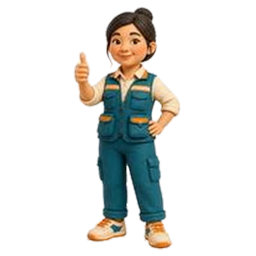
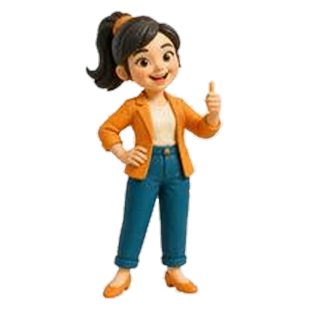

Đưa trái ra biển
Hợp tác xã nhỏ của Bác Ba ở miền Tây đưa lô sầu riêng đầu tiên ra thế giới. Mỗi tập dừng ở một ngã rẽ logistics có thật, và bạn bình chọn đường đi. Lựa chọn của số đông thành chuyện thật ở tập sau.
Xem thế nào
- 1Mỗi tập 4–6 phút theo một quyết định có thật: sông hay đường, tươi hay cấp đông, chốt cước hay chờ.
- 2Lumina bày chi phí, thời gian, rủi ro bằng số liệu có nguồn, không chọn giúp ai. Phim dừng ngay trước lúc chốt.
- 3Bạn bình chọn. Lựa chọn của số đông mở đầu tập sau; đường còn lại cũng được kể ngắn: nếu đi đường kia thì sao?
Nhân vật
Toàn bộ nhân vật đều đến từ các trò chơi BizOnland.
Lumina
Người kể chuyện, cố vấn. Bày số liệu, không chọn giúp ai.
Bác Ba
Chủ nhiệm hợp tác xã vườn sầu riêng, chủ lô hàng.
Bà Sáu Lành
Hiểu sông nước; hỏi một câu là trúng điều cả nhóm bỏ sót.
Minh Khang
Giám đốc tài chính, mê phương án rẻ.

Lina Park
Người vẽ tuyến phân phối; nghĩ về thời gian và rủi ro.

An Nhiên
Lo chất lượng trái: độ ngọt, độ tươi, đi lạnh.
Kim Long
CEO Kim Long Exports, đối thủ luôn đi trước một bước.
Tèo Soi
Rồng con ngồi trên nóc container, hay hỏi câu ngây thơ mà trúng.
Lịch phát mùa 1
Hai tuần một tập, Chủ nhật 20:00 (giờ Việt Nam), nghỉ quanh Tết. Có bản tiếng Việt và tiếng Anh, phụ đề hai thứ tiếng.
Số liệu trong phim lấy từ nguồn đã công bố như Báo cáo Logistics Việt Nam 2024 và được ghi nguồn trên hình. Hợp tác xã và lô hàng là giả định; nơi chốn, tuyến sông và cảng là có thật.